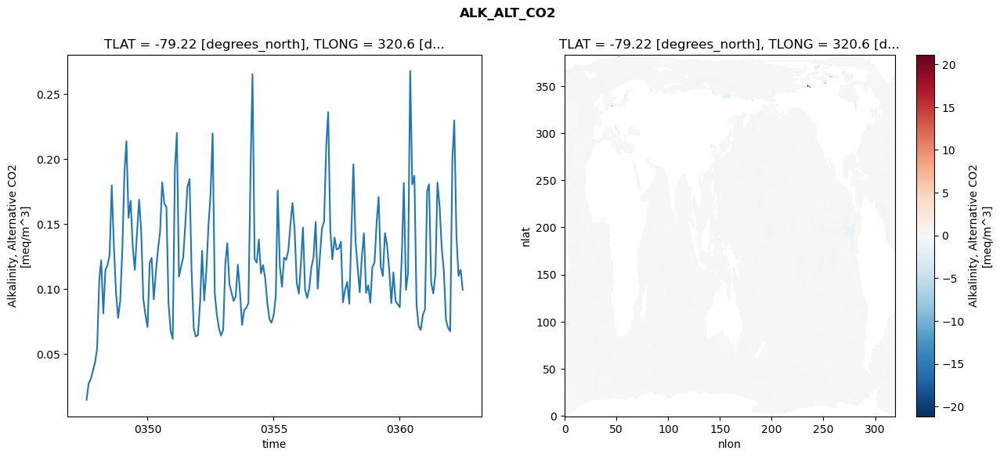
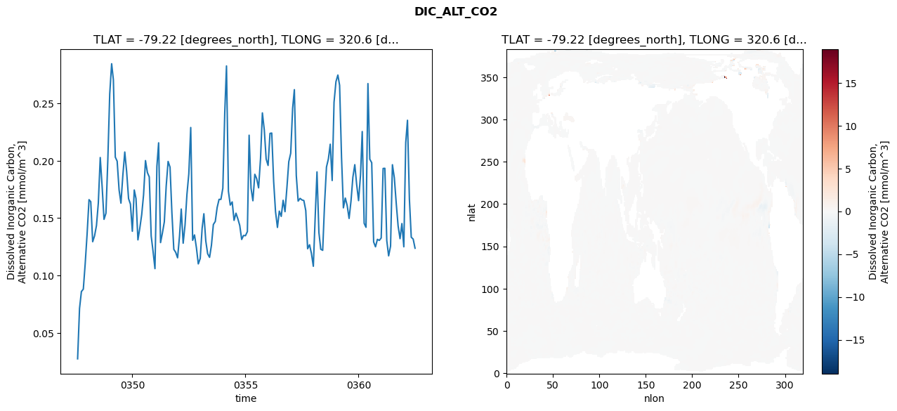
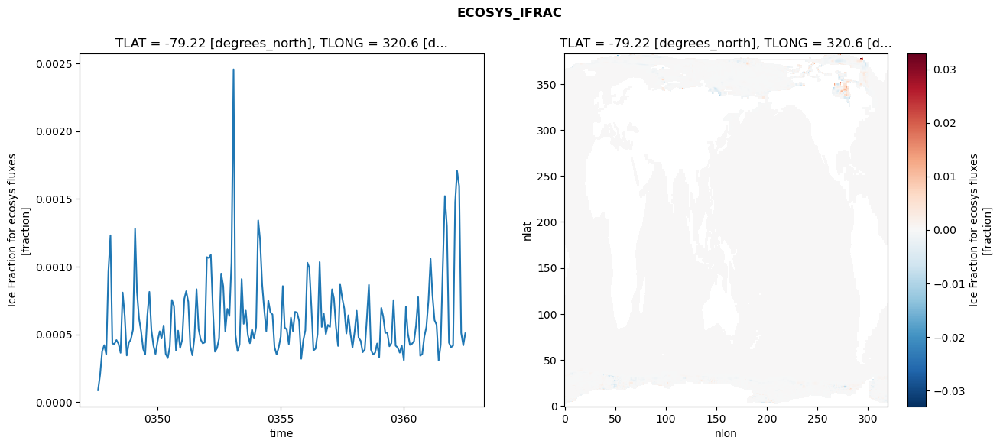
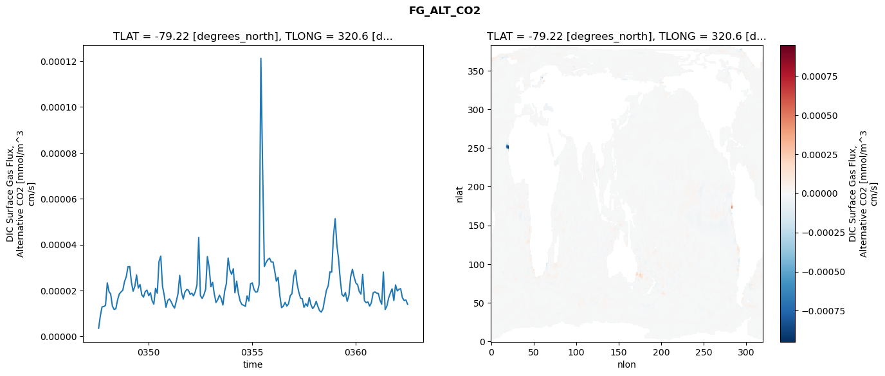

glb-dor_North_Atlantic_basin_030_1999-07-01_00122#
Simulation details#
Case: smyle.cdr-atlas-v0.glb-dor_North_Atlantic_basin_030_1999-07-01_00122.001
Basin: North_Atlantic_basin
Polygon: 30.0
Start date: 1999-07
Show code cell source Hide code cell source
import xarray as xr
import matplotlib.pyplot as plt
Show code cell source Hide code cell source
zarr_store = "/path/to/zarr/store"
# Parameters
zarr_store = "/global/cfs/projectdirs/m4746/Projects/Ocean-CDR-Atlas-v0/data/validation/smyle.cdr-atlas-v0.glb-dor_North_Atlantic_basin_030_1999-07-01_00122.001.validation.zarr"
Show code cell source Hide code cell source
%%time
ds_o = xr.open_zarr(zarr_store).compute()
ds_o
CPU times: user 731 ms, sys: 367 ms, total: 1.1 s
Wall time: 1.41 s
<xarray.Dataset> Size: 2MB
Dimensions: (nlat: 384, nlon: 320, time: 180)
Coordinates:
TLAT float64 8B -79.22
TLONG float64 8B 320.6
ULAT float64 8B -78.95
ULONG float64 8B 321.1
* time (time) object 1kB 0347-08-01 00:00:00 ... 0362-07-01 0...
z_t float32 4B 500.0
Dimensions without coordinates: nlat, nlon
Data variables:
ALK_ALT_CO2_diff (nlat, nlon) float32 492kB nan nan nan ... nan nan nan
ALK_ALT_CO2_rmse (time) float64 1kB 0.01441 0.02704 ... 0.1147 0.09917
DIC_ALT_CO2_diff (nlat, nlon) float32 492kB nan nan nan ... nan nan nan
DIC_ALT_CO2_rmse (time) float64 1kB 0.02745 0.07136 ... 0.1317 0.1238
ECOSYS_IFRAC_diff (nlat, nlon) float32 492kB nan nan nan ... nan nan nan
ECOSYS_IFRAC_rmse (time) float64 1kB 8.775e-05 0.0002037 ... 0.0005081
FG_ALT_CO2_diff (nlat, nlon) float32 492kB nan nan nan ... nan nan nan
FG_ALT_CO2_rmse (time) float64 1kB 3.567e-06 9.062e-06 ... 1.405e-05xarray.Dataset
- nlat: 384
- nlon: 320
- time: 180
- TLAT()float64-79.22
- long_name :
- array of t-grid latitudes
- units :
- degrees_north
array(-79.22052261)
- TLONG()float64320.6
- long_name :
- array of t-grid longitudes
- units :
- degrees_east
array(320.56250892)
- ULAT()float64-78.95
- long_name :
- array of u-grid latitudes
- units :
- degrees_north
array(-78.95289509)
- ULONG()float64321.1
- long_name :
- array of u-grid longitudes
- units :
- degrees_east
array(321.12500894)
- time(time)object0347-08-01 00:00:00 ... 0362-07-...
- bounds :
- time_bound
- long_name :
- time
array([cftime.DatetimeNoLeap(347, 8, 1, 0, 0, 0, 0, has_year_zero=True), cftime.DatetimeNoLeap(347, 9, 1, 0, 0, 0, 0, has_year_zero=True), cftime.DatetimeNoLeap(347, 10, 1, 0, 0, 0, 0, has_year_zero=True), cftime.DatetimeNoLeap(347, 11, 1, 0, 0, 0, 0, has_year_zero=True), cftime.DatetimeNoLeap(347, 12, 1, 0, 0, 0, 0, has_year_zero=True), cftime.DatetimeNoLeap(348, 1, 1, 0, 0, 0, 0, has_year_zero=True), cftime.DatetimeNoLeap(348, 2, 1, 0, 0, 0, 0, has_year_zero=True), cftime.DatetimeNoLeap(348, 3, 1, 0, 0, 0, 0, has_year_zero=True), cftime.DatetimeNoLeap(348, 4, 1, 0, 0, 0, 0, has_year_zero=True), cftime.DatetimeNoLeap(348, 5, 1, 0, 0, 0, 0, has_year_zero=True), cftime.DatetimeNoLeap(348, 6, 1, 0, 0, 0, 0, has_year_zero=True), cftime.DatetimeNoLeap(348, 7, 1, 0, 0, 0, 0, has_year_zero=True), cftime.DatetimeNoLeap(348, 8, 1, 0, 0, 0, 0, has_year_zero=True), cftime.DatetimeNoLeap(348, 9, 1, 0, 0, 0, 0, has_year_zero=True), cftime.DatetimeNoLeap(348, 10, 1, 0, 0, 0, 0, has_year_zero=True), cftime.DatetimeNoLeap(348, 11, 1, 0, 0, 0, 0, has_year_zero=True), cftime.DatetimeNoLeap(348, 12, 1, 0, 0, 0, 0, has_year_zero=True), cftime.DatetimeNoLeap(349, 1, 1, 0, 0, 0, 0, has_year_zero=True), cftime.DatetimeNoLeap(349, 2, 1, 0, 0, 0, 0, has_year_zero=True), cftime.DatetimeNoLeap(349, 3, 1, 0, 0, 0, 0, has_year_zero=True), cftime.DatetimeNoLeap(349, 4, 1, 0, 0, 0, 0, has_year_zero=True), cftime.DatetimeNoLeap(349, 5, 1, 0, 0, 0, 0, has_year_zero=True), cftime.DatetimeNoLeap(349, 6, 1, 0, 0, 0, 0, has_year_zero=True), cftime.DatetimeNoLeap(349, 7, 1, 0, 0, 0, 0, has_year_zero=True), cftime.DatetimeNoLeap(349, 8, 1, 0, 0, 0, 0, has_year_zero=True), cftime.DatetimeNoLeap(349, 9, 1, 0, 0, 0, 0, has_year_zero=True), cftime.DatetimeNoLeap(349, 10, 1, 0, 0, 0, 0, has_year_zero=True), cftime.DatetimeNoLeap(349, 11, 1, 0, 0, 0, 0, has_year_zero=True), cftime.DatetimeNoLeap(349, 12, 1, 0, 0, 0, 0, has_year_zero=True), cftime.DatetimeNoLeap(350, 1, 1, 0, 0, 0, 0, has_year_zero=True), cftime.DatetimeNoLeap(350, 2, 1, 0, 0, 0, 0, has_year_zero=True), cftime.DatetimeNoLeap(350, 3, 1, 0, 0, 0, 0, has_year_zero=True), cftime.DatetimeNoLeap(350, 4, 1, 0, 0, 0, 0, has_year_zero=True), cftime.DatetimeNoLeap(350, 5, 1, 0, 0, 0, 0, has_year_zero=True), cftime.DatetimeNoLeap(350, 6, 1, 0, 0, 0, 0, has_year_zero=True), cftime.DatetimeNoLeap(350, 7, 1, 0, 0, 0, 0, has_year_zero=True), cftime.DatetimeNoLeap(350, 8, 1, 0, 0, 0, 0, has_year_zero=True), cftime.DatetimeNoLeap(350, 9, 1, 0, 0, 0, 0, has_year_zero=True), cftime.DatetimeNoLeap(350, 10, 1, 0, 0, 0, 0, has_year_zero=True), cftime.DatetimeNoLeap(350, 11, 1, 0, 0, 0, 0, has_year_zero=True), cftime.DatetimeNoLeap(350, 12, 1, 0, 0, 0, 0, has_year_zero=True), cftime.DatetimeNoLeap(351, 1, 1, 0, 0, 0, 0, has_year_zero=True), cftime.DatetimeNoLeap(351, 2, 1, 0, 0, 0, 0, has_year_zero=True), cftime.DatetimeNoLeap(351, 3, 1, 0, 0, 0, 0, has_year_zero=True), cftime.DatetimeNoLeap(351, 4, 1, 0, 0, 0, 0, has_year_zero=True), cftime.DatetimeNoLeap(351, 5, 1, 0, 0, 0, 0, has_year_zero=True), cftime.DatetimeNoLeap(351, 6, 1, 0, 0, 0, 0, has_year_zero=True), cftime.DatetimeNoLeap(351, 7, 1, 0, 0, 0, 0, has_year_zero=True), cftime.DatetimeNoLeap(351, 8, 1, 0, 0, 0, 0, has_year_zero=True), cftime.DatetimeNoLeap(351, 9, 1, 0, 0, 0, 0, has_year_zero=True), cftime.DatetimeNoLeap(351, 10, 1, 0, 0, 0, 0, has_year_zero=True), cftime.DatetimeNoLeap(351, 11, 1, 0, 0, 0, 0, has_year_zero=True), cftime.DatetimeNoLeap(351, 12, 1, 0, 0, 0, 0, has_year_zero=True), cftime.DatetimeNoLeap(352, 1, 1, 0, 0, 0, 0, has_year_zero=True), cftime.DatetimeNoLeap(352, 2, 1, 0, 0, 0, 0, has_year_zero=True), cftime.DatetimeNoLeap(352, 3, 1, 0, 0, 0, 0, has_year_zero=True), cftime.DatetimeNoLeap(352, 4, 1, 0, 0, 0, 0, has_year_zero=True), cftime.DatetimeNoLeap(352, 5, 1, 0, 0, 0, 0, has_year_zero=True), cftime.DatetimeNoLeap(352, 6, 1, 0, 0, 0, 0, has_year_zero=True), cftime.DatetimeNoLeap(352, 7, 1, 0, 0, 0, 0, has_year_zero=True), cftime.DatetimeNoLeap(352, 8, 1, 0, 0, 0, 0, has_year_zero=True), cftime.DatetimeNoLeap(352, 9, 1, 0, 0, 0, 0, has_year_zero=True), cftime.DatetimeNoLeap(352, 10, 1, 0, 0, 0, 0, has_year_zero=True), cftime.DatetimeNoLeap(352, 11, 1, 0, 0, 0, 0, has_year_zero=True), cftime.DatetimeNoLeap(352, 12, 1, 0, 0, 0, 0, has_year_zero=True), cftime.DatetimeNoLeap(353, 1, 1, 0, 0, 0, 0, has_year_zero=True), cftime.DatetimeNoLeap(353, 2, 1, 0, 0, 0, 0, has_year_zero=True), cftime.DatetimeNoLeap(353, 3, 1, 0, 0, 0, 0, has_year_zero=True), cftime.DatetimeNoLeap(353, 4, 1, 0, 0, 0, 0, has_year_zero=True), cftime.DatetimeNoLeap(353, 5, 1, 0, 0, 0, 0, has_year_zero=True), cftime.DatetimeNoLeap(353, 6, 1, 0, 0, 0, 0, has_year_zero=True), cftime.DatetimeNoLeap(353, 7, 1, 0, 0, 0, 0, has_year_zero=True), cftime.DatetimeNoLeap(353, 8, 1, 0, 0, 0, 0, has_year_zero=True), cftime.DatetimeNoLeap(353, 9, 1, 0, 0, 0, 0, has_year_zero=True), cftime.DatetimeNoLeap(353, 10, 1, 0, 0, 0, 0, has_year_zero=True), cftime.DatetimeNoLeap(353, 11, 1, 0, 0, 0, 0, has_year_zero=True), cftime.DatetimeNoLeap(353, 12, 1, 0, 0, 0, 0, has_year_zero=True), cftime.DatetimeNoLeap(354, 1, 1, 0, 0, 0, 0, has_year_zero=True), cftime.DatetimeNoLeap(354, 2, 1, 0, 0, 0, 0, has_year_zero=True), cftime.DatetimeNoLeap(354, 3, 1, 0, 0, 0, 0, has_year_zero=True), cftime.DatetimeNoLeap(354, 4, 1, 0, 0, 0, 0, has_year_zero=True), cftime.DatetimeNoLeap(354, 5, 1, 0, 0, 0, 0, has_year_zero=True), cftime.DatetimeNoLeap(354, 6, 1, 0, 0, 0, 0, has_year_zero=True), cftime.DatetimeNoLeap(354, 7, 1, 0, 0, 0, 0, has_year_zero=True), cftime.DatetimeNoLeap(354, 8, 1, 0, 0, 0, 0, has_year_zero=True), cftime.DatetimeNoLeap(354, 9, 1, 0, 0, 0, 0, has_year_zero=True), cftime.DatetimeNoLeap(354, 10, 1, 0, 0, 0, 0, has_year_zero=True), cftime.DatetimeNoLeap(354, 11, 1, 0, 0, 0, 0, has_year_zero=True), cftime.DatetimeNoLeap(354, 12, 1, 0, 0, 0, 0, has_year_zero=True), cftime.DatetimeNoLeap(355, 1, 1, 0, 0, 0, 0, has_year_zero=True), cftime.DatetimeNoLeap(355, 2, 1, 0, 0, 0, 0, has_year_zero=True), cftime.DatetimeNoLeap(355, 3, 1, 0, 0, 0, 0, has_year_zero=True), cftime.DatetimeNoLeap(355, 4, 1, 0, 0, 0, 0, has_year_zero=True), cftime.DatetimeNoLeap(355, 5, 1, 0, 0, 0, 0, has_year_zero=True), cftime.DatetimeNoLeap(355, 6, 1, 0, 0, 0, 0, has_year_zero=True), cftime.DatetimeNoLeap(355, 7, 1, 0, 0, 0, 0, has_year_zero=True), cftime.DatetimeNoLeap(355, 8, 1, 0, 0, 0, 0, has_year_zero=True), cftime.DatetimeNoLeap(355, 9, 1, 0, 0, 0, 0, has_year_zero=True), cftime.DatetimeNoLeap(355, 10, 1, 0, 0, 0, 0, has_year_zero=True), cftime.DatetimeNoLeap(355, 11, 1, 0, 0, 0, 0, has_year_zero=True), cftime.DatetimeNoLeap(355, 12, 1, 0, 0, 0, 0, has_year_zero=True), cftime.DatetimeNoLeap(356, 1, 1, 0, 0, 0, 0, has_year_zero=True), cftime.DatetimeNoLeap(356, 2, 1, 0, 0, 0, 0, has_year_zero=True), cftime.DatetimeNoLeap(356, 3, 1, 0, 0, 0, 0, has_year_zero=True), cftime.DatetimeNoLeap(356, 4, 1, 0, 0, 0, 0, has_year_zero=True), cftime.DatetimeNoLeap(356, 5, 1, 0, 0, 0, 0, has_year_zero=True), cftime.DatetimeNoLeap(356, 6, 1, 0, 0, 0, 0, has_year_zero=True), cftime.DatetimeNoLeap(356, 7, 1, 0, 0, 0, 0, has_year_zero=True), cftime.DatetimeNoLeap(356, 8, 1, 0, 0, 0, 0, has_year_zero=True), cftime.DatetimeNoLeap(356, 9, 1, 0, 0, 0, 0, has_year_zero=True), cftime.DatetimeNoLeap(356, 10, 1, 0, 0, 0, 0, has_year_zero=True), cftime.DatetimeNoLeap(356, 11, 1, 0, 0, 0, 0, has_year_zero=True), cftime.DatetimeNoLeap(356, 12, 1, 0, 0, 0, 0, has_year_zero=True), cftime.DatetimeNoLeap(357, 1, 1, 0, 0, 0, 0, has_year_zero=True), cftime.DatetimeNoLeap(357, 2, 1, 0, 0, 0, 0, has_year_zero=True), cftime.DatetimeNoLeap(357, 3, 1, 0, 0, 0, 0, has_year_zero=True), cftime.DatetimeNoLeap(357, 4, 1, 0, 0, 0, 0, has_year_zero=True), cftime.DatetimeNoLeap(357, 5, 1, 0, 0, 0, 0, has_year_zero=True), cftime.DatetimeNoLeap(357, 6, 1, 0, 0, 0, 0, has_year_zero=True), cftime.DatetimeNoLeap(357, 7, 1, 0, 0, 0, 0, has_year_zero=True), cftime.DatetimeNoLeap(357, 8, 1, 0, 0, 0, 0, has_year_zero=True), cftime.DatetimeNoLeap(357, 9, 1, 0, 0, 0, 0, has_year_zero=True), cftime.DatetimeNoLeap(357, 10, 1, 0, 0, 0, 0, has_year_zero=True), cftime.DatetimeNoLeap(357, 11, 1, 0, 0, 0, 0, has_year_zero=True), cftime.DatetimeNoLeap(357, 12, 1, 0, 0, 0, 0, has_year_zero=True), cftime.DatetimeNoLeap(358, 1, 1, 0, 0, 0, 0, has_year_zero=True), cftime.DatetimeNoLeap(358, 2, 1, 0, 0, 0, 0, has_year_zero=True), cftime.DatetimeNoLeap(358, 3, 1, 0, 0, 0, 0, has_year_zero=True), cftime.DatetimeNoLeap(358, 4, 1, 0, 0, 0, 0, has_year_zero=True), cftime.DatetimeNoLeap(358, 5, 1, 0, 0, 0, 0, has_year_zero=True), cftime.DatetimeNoLeap(358, 6, 1, 0, 0, 0, 0, has_year_zero=True), cftime.DatetimeNoLeap(358, 7, 1, 0, 0, 0, 0, has_year_zero=True), cftime.DatetimeNoLeap(358, 8, 1, 0, 0, 0, 0, has_year_zero=True), cftime.DatetimeNoLeap(358, 9, 1, 0, 0, 0, 0, has_year_zero=True), cftime.DatetimeNoLeap(358, 10, 1, 0, 0, 0, 0, has_year_zero=True), cftime.DatetimeNoLeap(358, 11, 1, 0, 0, 0, 0, has_year_zero=True), cftime.DatetimeNoLeap(358, 12, 1, 0, 0, 0, 0, has_year_zero=True), cftime.DatetimeNoLeap(359, 1, 1, 0, 0, 0, 0, has_year_zero=True), cftime.DatetimeNoLeap(359, 2, 1, 0, 0, 0, 0, has_year_zero=True), cftime.DatetimeNoLeap(359, 3, 1, 0, 0, 0, 0, has_year_zero=True), cftime.DatetimeNoLeap(359, 4, 1, 0, 0, 0, 0, has_year_zero=True), cftime.DatetimeNoLeap(359, 5, 1, 0, 0, 0, 0, has_year_zero=True), cftime.DatetimeNoLeap(359, 6, 1, 0, 0, 0, 0, has_year_zero=True), cftime.DatetimeNoLeap(359, 7, 1, 0, 0, 0, 0, has_year_zero=True), cftime.DatetimeNoLeap(359, 8, 1, 0, 0, 0, 0, has_year_zero=True), cftime.DatetimeNoLeap(359, 9, 1, 0, 0, 0, 0, has_year_zero=True), cftime.DatetimeNoLeap(359, 10, 1, 0, 0, 0, 0, has_year_zero=True), cftime.DatetimeNoLeap(359, 11, 1, 0, 0, 0, 0, has_year_zero=True), cftime.DatetimeNoLeap(359, 12, 1, 0, 0, 0, 0, has_year_zero=True), cftime.DatetimeNoLeap(360, 1, 1, 0, 0, 0, 0, has_year_zero=True), cftime.DatetimeNoLeap(360, 2, 1, 0, 0, 0, 0, has_year_zero=True), cftime.DatetimeNoLeap(360, 3, 1, 0, 0, 0, 0, has_year_zero=True), cftime.DatetimeNoLeap(360, 4, 1, 0, 0, 0, 0, has_year_zero=True), cftime.DatetimeNoLeap(360, 5, 1, 0, 0, 0, 0, has_year_zero=True), cftime.DatetimeNoLeap(360, 6, 1, 0, 0, 0, 0, has_year_zero=True), cftime.DatetimeNoLeap(360, 7, 1, 0, 0, 0, 0, has_year_zero=True), cftime.DatetimeNoLeap(360, 8, 1, 0, 0, 0, 0, has_year_zero=True), cftime.DatetimeNoLeap(360, 9, 1, 0, 0, 0, 0, has_year_zero=True), cftime.DatetimeNoLeap(360, 10, 1, 0, 0, 0, 0, has_year_zero=True), cftime.DatetimeNoLeap(360, 11, 1, 0, 0, 0, 0, has_year_zero=True), cftime.DatetimeNoLeap(360, 12, 1, 0, 0, 0, 0, has_year_zero=True), cftime.DatetimeNoLeap(361, 1, 1, 0, 0, 0, 0, has_year_zero=True), cftime.DatetimeNoLeap(361, 2, 1, 0, 0, 0, 0, has_year_zero=True), cftime.DatetimeNoLeap(361, 3, 1, 0, 0, 0, 0, has_year_zero=True), cftime.DatetimeNoLeap(361, 4, 1, 0, 0, 0, 0, has_year_zero=True), cftime.DatetimeNoLeap(361, 5, 1, 0, 0, 0, 0, has_year_zero=True), cftime.DatetimeNoLeap(361, 6, 1, 0, 0, 0, 0, has_year_zero=True), cftime.DatetimeNoLeap(361, 7, 1, 0, 0, 0, 0, has_year_zero=True), cftime.DatetimeNoLeap(361, 8, 1, 0, 0, 0, 0, has_year_zero=True), cftime.DatetimeNoLeap(361, 9, 1, 0, 0, 0, 0, has_year_zero=True), cftime.DatetimeNoLeap(361, 10, 1, 0, 0, 0, 0, has_year_zero=True), cftime.DatetimeNoLeap(361, 11, 1, 0, 0, 0, 0, has_year_zero=True), cftime.DatetimeNoLeap(361, 12, 1, 0, 0, 0, 0, has_year_zero=True), cftime.DatetimeNoLeap(362, 1, 1, 0, 0, 0, 0, has_year_zero=True), cftime.DatetimeNoLeap(362, 2, 1, 0, 0, 0, 0, has_year_zero=True), cftime.DatetimeNoLeap(362, 3, 1, 0, 0, 0, 0, has_year_zero=True), cftime.DatetimeNoLeap(362, 4, 1, 0, 0, 0, 0, has_year_zero=True), cftime.DatetimeNoLeap(362, 5, 1, 0, 0, 0, 0, has_year_zero=True), cftime.DatetimeNoLeap(362, 6, 1, 0, 0, 0, 0, has_year_zero=True), cftime.DatetimeNoLeap(362, 7, 1, 0, 0, 0, 0, has_year_zero=True)], dtype=object) - z_t()float32500.0
- long_name :
- depth from surface to midpoint of layer
- positive :
- down
- units :
- centimeters
- valid_max :
- 537500.0
- valid_min :
- 500.0
array(500., dtype=float32)
- ALK_ALT_CO2_diff(nlat, nlon)float32nan nan nan nan ... nan nan nan nan
- cell_methods :
- time: mean
- grid_loc :
- 3111
- long_name :
- Alkalinity, Alternative CO2
- units :
- meq/m^3
array([[ nan, nan, nan, ..., nan, nan, nan], [ nan, nan, nan, ..., nan, nan, nan], [0.00585938, 0.00219727, 0.01660156, ..., nan, nan, nan], ..., [ nan, nan, nan, ..., nan, nan, nan], [ nan, nan, nan, ..., nan, nan, nan], [ nan, nan, nan, ..., nan, nan, nan]], dtype=float32) - ALK_ALT_CO2_rmse(time)float640.01441 0.02704 ... 0.1147 0.09917
- cell_methods :
- time: mean
- grid_loc :
- 3111
- long_name :
- Alkalinity, Alternative CO2
- units :
- meq/m^3
array([0.01440645, 0.02703694, 0.03041792, 0.03670581, 0.04308277, 0.05344021, 0.10648651, 0.12194324, 0.08105971, 0.11445543, 0.11831377, 0.12610587, 0.17972551, 0.1328414 , 0.09767989, 0.07758237, 0.09046103, 0.12985837, 0.18960176, 0.21373165, 0.15474852, 0.16786656, 0.13229692, 0.11448782, 0.14251767, 0.16873476, 0.1445923 , 0.09181081, 0.08008418, 0.070511 , 0.11980565, 0.12395555, 0.09188642, 0.11235038, 0.13024735, 0.1435367 , 0.18219144, 0.16557732, 0.16292654, 0.08881864, 0.06759189, 0.06138367, 0.19247171, 0.22011728, 0.10931841, 0.11700456, 0.12403025, 0.14938987, 0.1784534 , 0.18454515, 0.11244328, 0.0692665 , 0.06316769, 0.06448279, 0.08993984, 0.12930197, 0.09094547, 0.11291476, 0.14808246, 0.17210197, 0.2197274 , 0.09606509, 0.08016076, 0.06922332, 0.06400534, 0.06846101, 0.11984918, 0.13522796, 0.10355712, 0.09715491, 0.09060102, 0.09417522, 0.11857303, 0.09700896, 0.07208471, 0.08363625, 0.08529241, 0.08900133, 0.19221844, 0.26547428, 0.12303233, 0.12003957, 0.13804596, 0.11197556, 0.11831078, 0.10787928, 0.08933814, 0.0766592 , 0.07391227, 0.0795467 , 0.09426728, 0.17581045, 0.11723801, 0.1015121 , 0.1240383 , 0.12229277, 0.12933775, 0.14955425, 0.16613404, 0.14525411, 0.10458969, 0.09623788, 0.12063002, 0.14726508, 0.09915004, 0.09291176, 0.10086327, 0.11645396, 0.12433147, 0.15153782, 0.10016343, 0.12467547, 0.14658333, 0.15163143, 0.2099693 , 0.23613495, 0.1454711 , 0.12266628, 0.13951825, 0.13032642, 0.13092925, 0.13630124, 0.08962879, 0.09928243, 0.10526423, 0.08849835, 0.14582885, 0.19583821, 0.13710667, 0.11681415, 0.09725751, 0.12466293, 0.14279185, 0.09682489, 0.10267891, 0.08927588, 0.11678202, 0.12021028, 0.15170362, 0.17075592, 0.11701883, 0.10987232, 0.14288165, 0.13377691, 0.11529731, 0.08889825, 0.11269465, 0.09079361, 0.08819382, 0.08578963, 0.1273825 , 0.18157429, 0.09916112, 0.11246837, 0.26783483, 0.18041155, 0.1870931 , 0.08782281, 0.0713673 , 0.06827423, 0.07983253, 0.08411458, 0.17532246, 0.18040987, 0.10476526, 0.0963646 , 0.11142047, 0.18194616, 0.16348227, 0.13109585, 0.11368631, 0.07602039, 0.0701253 , 0.06718948, 0.19930792, 0.22973887, 0.14136538, 0.10990809, 0.11469752, 0.09916551]) - DIC_ALT_CO2_diff(nlat, nlon)float32nan nan nan nan ... nan nan nan nan
- cell_methods :
- time: mean
- grid_loc :
- 3111
- long_name :
- Dissolved Inorganic Carbon, Alternative CO2
- units :
- mmol/m^3
array([[ nan, nan, nan, ..., nan, nan, nan], [ nan, nan, nan, ..., nan, nan, nan], [0.00634766, 0.00561523, 0.01293945, ..., nan, nan, nan], ..., [ nan, nan, nan, ..., nan, nan, nan], [ nan, nan, nan, ..., nan, nan, nan], [ nan, nan, nan, ..., nan, nan, nan]], dtype=float32) - DIC_ALT_CO2_rmse(time)float640.02745 0.07136 ... 0.1317 0.1238
- cell_methods :
- time: mean
- grid_loc :
- 3111
- long_name :
- Dissolved Inorganic Carbon, Alternative CO2
- units :
- mmol/m^3
array([0.02744741, 0.07136233, 0.08603826, 0.08814795, 0.11007745, 0.13612834, 0.16611219, 0.16433104, 0.12945518, 0.13451557, 0.14351558, 0.1630831 , 0.20280522, 0.17712885, 0.14895168, 0.15426974, 0.20008807, 0.25812694, 0.28452092, 0.27053288, 0.20314138, 0.19963824, 0.17466006, 0.16307725, 0.18750051, 0.20760557, 0.19055632, 0.166994 , 0.16226357, 0.13858366, 0.17451318, 0.16709379, 0.13108541, 0.14110286, 0.15307249, 0.17027622, 0.20013134, 0.18968124, 0.18589793, 0.13443314, 0.12118536, 0.10602306, 0.19515054, 0.21561969, 0.12871421, 0.13702673, 0.14676425, 0.17785169, 0.19941312, 0.19442307, 0.15485203, 0.12282247, 0.12025908, 0.11544662, 0.13430104, 0.15793705, 0.12817619, 0.14391839, 0.17080713, 0.18857889, 0.2289667 , 0.13067854, 0.13538648, 0.12409204, 0.1101367 , 0.11483033, 0.14120773, 0.15382369, 0.13002388, 0.11897605, 0.1158512 , 0.12631913, 0.14448009, 0.14709873, 0.15921667, 0.16635985, 0.16634921, 0.1760611 , 0.24181627, 0.28259271, 0.17342317, 0.16137307, 0.16413884, 0.14806676, 0.15431784, 0.14931481, 0.14358819, 0.13143906, 0.13491882, 0.13471227, 0.13828429, 0.22224813, 0.17612031, 0.1651674 , 0.18821305, 0.18442111, 0.17640485, 0.20180013, 0.24168092, 0.22676648, 0.20150855, 0.19591538, 0.22385212, 0.22412636, 0.18185283, 0.15565242, 0.14191656, 0.15611212, 0.15153136, 0.16553699, 0.15564277, 0.17671953, 0.19920173, 0.20655682, 0.24568145, 0.2619341 , 0.18715535, 0.16485749, 0.16721776, 0.16589569, 0.1653269 , 0.15660028, 0.12334896, 0.12682104, 0.11933439, 0.10808042, 0.15237101, 0.19030216, 0.1374753 , 0.12290719, 0.12196859, 0.16217862, 0.19450016, 0.20163612, 0.21439226, 0.18277014, 0.25093118, 0.26892839, 0.27466738, 0.2657199 , 0.20291746, 0.15899033, 0.16749449, 0.16100916, 0.14974497, 0.1650266 , 0.18563384, 0.19656803, 0.17941217, 0.16526334, 0.18736709, 0.22544206, 0.14551071, 0.14201416, 0.26721816, 0.2013392 , 0.19830319, 0.12924449, 0.12503202, 0.13155693, 0.13059266, 0.13271813, 0.19329456, 0.19343282, 0.13038675, 0.11716117, 0.12560565, 0.19653768, 0.18507782, 0.16257309, 0.14313329, 0.13214671, 0.14526728, 0.12504054, 0.21594407, 0.23526268, 0.16656143, 0.13335518, 0.13174872, 0.12381464]) - ECOSYS_IFRAC_diff(nlat, nlon)float32nan nan nan nan ... nan nan nan nan
- cell_methods :
- time: mean
- grid_loc :
- 2110
- long_name :
- Ice Fraction for ecosys fluxes
- units :
- fraction
array([[ nan, nan, nan, ..., nan, nan, nan], [ nan, nan, nan, ..., nan, nan, nan], [3.2484531e-05, 5.6028366e-05, 2.7775764e-05, ..., nan, nan, nan], ..., [ nan, nan, nan, ..., nan, nan, nan], [ nan, nan, nan, ..., nan, nan, nan], [ nan, nan, nan, ..., nan, nan, nan]], dtype=float32) - ECOSYS_IFRAC_rmse(time)float648.775e-05 0.0002037 ... 0.0005081
- cell_methods :
- time: mean
- grid_loc :
- 2110
- long_name :
- Ice Fraction for ecosys fluxes
- units :
- fraction
array([8.77459183e-05, 2.03722986e-04, 3.74855856e-04, 4.20807570e-04, 3.50968178e-04, 9.60781505e-04, 1.23158677e-03, 4.31686827e-04, 4.30019162e-04, 4.58249511e-04, 4.30808294e-04, 3.64045298e-04, 8.09134024e-04, 6.35581812e-04, 3.44468527e-04, 4.39292159e-04, 4.63320470e-04, 5.34829235e-04, 1.28020181e-03, 8.14096543e-04, 6.17087766e-04, 5.23928369e-04, 3.93290652e-04, 3.52275319e-04, 6.35577059e-04, 8.13961430e-04, 5.32891131e-04, 4.16043454e-04, 3.54757207e-04, 4.50839025e-04, 5.22901384e-04, 4.69299725e-04, 5.66196183e-04, 3.56036787e-04, 3.25452272e-04, 4.10851054e-04, 7.54494971e-04, 7.09145230e-04, 3.80921808e-04, 5.27489893e-04, 3.99411112e-04, 4.61510877e-04, 7.62556368e-04, 8.18706631e-04, 7.40547701e-04, 4.11845118e-04, 3.45424929e-04, 4.78327586e-04, 8.33587172e-04, 5.38931500e-04, 4.62442094e-04, 4.33650427e-04, 4.40582021e-04, 1.07011011e-03, 1.06362620e-03, 1.08748696e-03, 6.82934395e-04, 3.72361796e-04, 3.98377581e-04, 4.69485071e-04, 9.49103535e-04, 8.55938611e-04, 5.22785191e-04, 6.88558613e-04, 6.36601808e-04, 1.03083496e-03, 2.45632221e-03, 4.96442241e-04, 3.76597750e-04, 4.24138967e-04, 9.08738598e-04, 5.77783674e-04, 6.75616749e-04, 4.94438855e-04, 4.34288467e-04, 5.38548219e-04, 4.69285806e-04, 5.53713646e-04, 1.34155220e-03, 1.19843742e-03, ... 4.54434458e-04, 5.30342082e-04, 1.02890443e-03, 9.92068260e-04, 6.98161093e-04, 3.81445830e-04, 3.94391139e-04, 5.02486078e-04, 1.03398747e-03, 5.54938027e-04, 6.53376974e-04, 5.01950318e-04, 5.69706013e-04, 5.54639826e-04, 8.32708217e-04, 7.64747211e-04, 5.50441986e-04, 4.14362199e-04, 8.67120115e-04, 7.69405491e-04, 6.91854727e-04, 5.06554848e-04, 6.41072088e-04, 5.05145543e-04, 4.03204744e-04, 5.18059174e-04, 6.74589578e-04, 4.75701506e-04, 4.52388241e-04, 3.68287627e-04, 3.88445872e-04, 6.12765671e-04, 8.65736689e-04, 3.86891046e-04, 3.51090966e-04, 3.64615749e-04, 4.32827939e-04, 3.31496555e-04, 6.95693909e-04, 6.32652156e-04, 5.10816293e-04, 5.13154711e-04, 4.11848944e-04, 4.35676946e-04, 7.52845382e-04, 4.16516252e-04, 4.02906267e-04, 3.65057861e-04, 4.18826855e-04, 3.09263193e-04, 7.04668203e-04, 5.10063006e-04, 4.22435806e-04, 4.30265420e-04, 4.49857474e-04, 5.67496749e-04, 7.74820918e-04, 3.41946387e-04, 3.55420518e-04, 4.84798280e-04, 5.54788852e-04, 7.49713688e-04, 1.05809493e-03, 7.92748435e-04, 6.04468178e-04, 5.71384220e-04, 3.06678982e-04, 4.23492155e-04, 9.91145372e-04, 1.52110288e-03, 1.29902793e-03, 4.38343676e-04, 4.04702923e-04, 4.16911379e-04, 1.47558352e-03, 1.70729705e-03, 1.59485009e-03, 5.10570119e-04, 4.19414988e-04, 5.08122515e-04]) - FG_ALT_CO2_diff(nlat, nlon)float32nan nan nan nan ... nan nan nan nan
- cell_methods :
- time: mean
- grid_loc :
- 2110
- long_name :
- DIC Surface Gas Flux, Alternative CO2
- units :
- mmol/m^3 cm/s
array([[ nan, nan, nan, ..., nan, nan, nan], [ nan, nan, nan, ..., nan, nan, nan], [-2.1558435e-08, -3.4332970e-08, -1.8838513e-08, ..., nan, nan, nan], ..., [ nan, nan, nan, ..., nan, nan, nan], [ nan, nan, nan, ..., nan, nan, nan], [ nan, nan, nan, ..., nan, nan, nan]], dtype=float32) - FG_ALT_CO2_rmse(time)float643.567e-06 9.062e-06 ... 1.405e-05
- cell_methods :
- time: mean
- grid_loc :
- 2110
- long_name :
- DIC Surface Gas Flux, Alternative CO2
- units :
- mmol/m^3 cm/s
array([3.56722274e-06, 9.06210886e-06, 1.29033589e-05, 1.30162366e-05, 1.35944909e-05, 2.33320210e-05, 1.94842555e-05, 1.85590482e-05, 1.32052323e-05, 1.17751269e-05, 1.20875051e-05, 1.58957826e-05, 1.85521499e-05, 1.94013926e-05, 2.01507160e-05, 2.39458702e-05, 2.59835623e-05, 3.04150766e-05, 3.04600092e-05, 2.38079207e-05, 1.97276584e-05, 2.18095940e-05, 2.67534267e-05, 2.11229165e-05, 2.26185101e-05, 1.81083827e-05, 1.71450098e-05, 1.95557148e-05, 2.01745535e-05, 1.77575770e-05, 1.90369366e-05, 1.56424368e-05, 1.40768941e-05, 2.09976180e-05, 1.88729340e-05, 3.26387698e-05, 3.50082574e-05, 2.18169627e-05, 1.80067792e-05, 1.27051052e-05, 1.56398219e-05, 1.63392116e-05, 1.50927741e-05, 1.35214315e-05, 1.23470508e-05, 1.52511498e-05, 1.86283430e-05, 2.66183058e-05, 1.92856907e-05, 1.63266191e-05, 1.93076843e-05, 2.04635367e-05, 2.01727786e-05, 1.83326805e-05, 1.88464596e-05, 1.76774052e-05, 1.94770758e-05, 2.23981456e-05, 4.31285815e-05, 1.77756572e-05, 1.65658982e-05, 1.81467414e-05, 2.05916036e-05, 3.48134113e-05, 3.03217979e-05, 2.16704369e-05, 2.35768308e-05, 1.87347100e-05, 1.47844446e-05, 1.59870870e-05, 1.79845162e-05, 1.65355398e-05, 1.36740157e-05, 1.97011813e-05, 2.30349050e-05, 3.41846010e-05, 2.90157280e-05, 2.70658641e-05, 2.95093273e-05, 1.90238973e-05, ... 3.24469969e-05, 3.24701339e-05, 2.83587065e-05, 2.40761867e-05, 2.57201841e-05, 1.78417899e-05, 1.25541832e-05, 1.31818956e-05, 1.48288931e-05, 1.32506546e-05, 1.41938049e-05, 1.77667451e-05, 1.86086170e-05, 2.61944018e-05, 2.88864849e-05, 2.29110537e-05, 1.92889441e-05, 1.66847236e-05, 1.64367047e-05, 1.27051951e-05, 1.42910831e-05, 1.31376760e-05, 1.69436497e-05, 1.37922482e-05, 1.21575582e-05, 1.32411855e-05, 1.53053183e-05, 1.31980163e-05, 1.12428342e-05, 1.06009640e-05, 1.20244684e-05, 1.61911036e-05, 2.01947451e-05, 2.20396401e-05, 2.81257311e-05, 2.80234091e-05, 4.34110691e-05, 5.13142879e-05, 3.95808272e-05, 3.40634320e-05, 2.46607261e-05, 1.82805247e-05, 1.74475898e-05, 1.91647044e-05, 1.52941970e-05, 1.79148312e-05, 2.59804650e-05, 2.92914750e-05, 2.59668422e-05, 2.33191699e-05, 2.25285989e-05, 1.96439780e-05, 1.84308002e-05, 2.70795754e-05, 1.55652986e-05, 1.47065373e-05, 1.50779782e-05, 1.32375122e-05, 1.46985822e-05, 1.89579991e-05, 1.94207024e-05, 1.89034215e-05, 1.87185114e-05, 1.58121650e-05, 1.40316985e-05, 2.81004015e-05, 1.17579950e-05, 1.31734575e-05, 1.67053397e-05, 1.89299753e-05, 2.07616336e-05, 1.56326005e-05, 2.24644387e-05, 1.98514682e-05, 2.05915197e-05, 2.07991865e-05, 1.68661131e-05, 1.56590758e-05, 1.59368892e-05, 1.40516212e-05])
- timePandasIndex
PandasIndex(CFTimeIndex([0347-08-01 00:00:00, 0347-09-01 00:00:00, 0347-10-01 00:00:00, 0347-11-01 00:00:00, 0347-12-01 00:00:00, 0348-01-01 00:00:00, 0348-02-01 00:00:00, 0348-03-01 00:00:00, 0348-04-01 00:00:00, 0348-05-01 00:00:00, ... 0361-10-01 00:00:00, 0361-11-01 00:00:00, 0361-12-01 00:00:00, 0362-01-01 00:00:00, 0362-02-01 00:00:00, 0362-03-01 00:00:00, 0362-04-01 00:00:00, 0362-05-01 00:00:00, 0362-06-01 00:00:00, 0362-07-01 00:00:00], dtype='object', length=180, calendar='noleap', freq='MS'))
Show code cell source Hide code cell source
variables = [v[:-5] for v in ds_o.variables if "_rmse" in v]
Show code cell source Hide code cell source
plt.rcParams.update({'figure.max_open_warning': 0})
for v in variables:
fig, axs = plt.subplots(1, 2, figsize=(15, 6))
ds_o[f"{v}_rmse"].plot(ax=axs[0])
ds_o[f"{v}_diff"].plot(ax=axs[1])
plt.suptitle(v, fontweight="bold")



